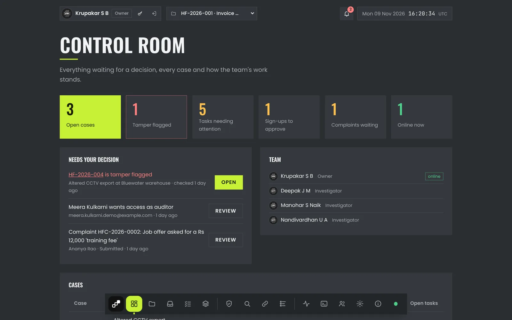
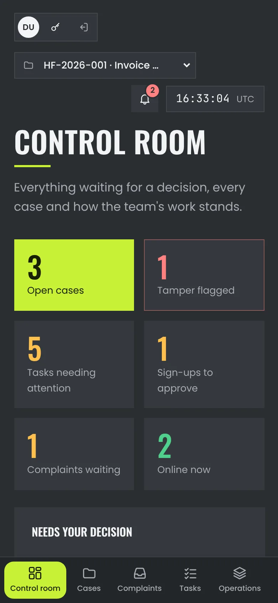

Files change quietly
A single edited cell in a spreadsheet or a re-saved image looks exactly like the original. Without a seal, nobody can show it was not touched.
Digital evidence integrity
Every file sealed, every hand-over signed, every change caught. Hasfragis keeps digital evidence provably untouched from the moment it is collected to the day it is presented.
The problem
A single edited cell in a spreadsheet or a re-saved image looks exactly like the original. Without a seal, nobody can show it was not touched.
Who held the evidence, when, and who handed it to whom? Paper logs and shared drives leave gaps that are easy to challenge.
Usually the only proof is a person's word. Hasfragis replaces that with mathematics anyone can re-run.
How it works
Files arrive in batches with a receipt each. Sealing hashes every file with SHA-256, builds a Merkle tree and signs its root into the custody ledger.
Custody moves only by a signed hand-over and a signed acceptance. Each entry links to the one before it, so nothing can be removed or reordered unseen.
One click re-hashes the evidence and rebuilds the tree. A changed file breaks its path to the sealed root, and the dashboard shows exactly which one.
Closing a case files one zip: the sealed evidence, a proof for every file, the ledger, public keys, the signed report and a checker that runs anywhere.
Inside the dashboard
Real screens from Hasfragis, running on fictional demo cases.

What it does
Each case has its own ledger. Evidence found later goes into a new batch, sealed by whoever holds custody; batch roots combine into one case root.
Files of any format up to 1 GB, scanned on arrival, recorded with their hash and kept exactly as received. Nothing is ever converted.
The incident as a UTC timeline built from sealed files, logs and Plaso or Autopsy exports. Events from changed evidence stay visible but marked untrusted.
Tasks, statuses, an operations queue and a notification bell, with roles for owner, admin, investigator and auditor.
Victims file a complaint, get a tracking ID, follow its progress, add files and download the report once it is released to them.
A signed PDF case report on demand, and an end-of-case zip with an offline checker that ends in PACKAGE VERIFIED or names the changed file.
Security
Every claim on this page is checked by an automated suite of 60 attack and tamper scenarios, from an edited file to a forged ledger entry.

Under the hood
The team